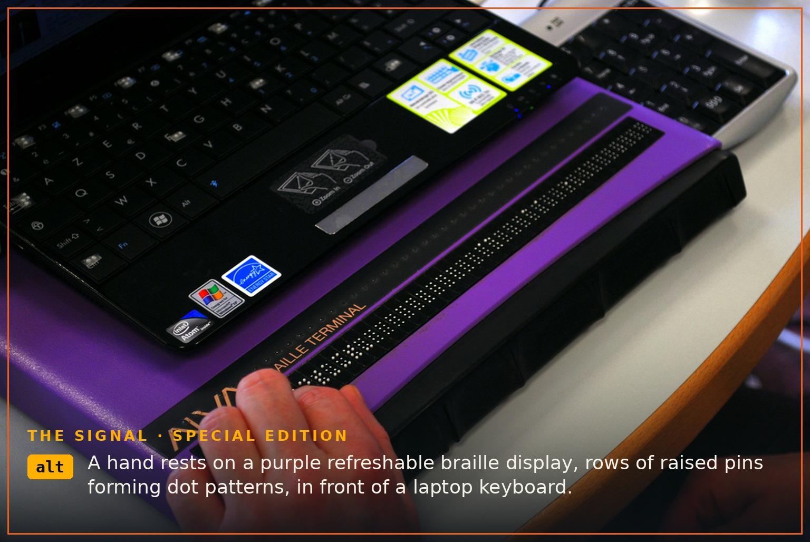

The Signal · Special Edition · October 2026
What the Pictures Say Now
Published October 5, 2026 · By Justin Spencer Smith · Also on LinkedIn

Published off-cycle. Some weeks the build is concrete; this week it's words.
The University of Michigan's Disability Equity Office is running a 10-Week Accessibility Challenge, and this week's theme is alt text — the short descriptions that let screen readers speak images aloud. The premise is simple: people who are blind or have low vision navigate the web with screen readers, and when a screen reader reaches an image, it reads the alt text. No alt text, no image. Bad alt text, a bad image.
We decided to stop theorizing and audit the whole site. Every page on detroitautomationacademy.com, every image: 50 images across 16 pages, each one opened and looked at before a word was written.
What we found was unflattering in the specific way these audits always are. Thirty of the fifty were our own logo sitting next to the written-out name "Detroit Automation Academy" — the digital equivalent of introducing yourself twice. Four were CAD renders of the Forge Line vehicles whose alt text repeated the card heading word for word. Seven were Signal cover artworks labeled, with great precision, "cover art."
All of it is fixed now. The logos are marked decorative, so screen readers skip them instead of announcing the academy's name twice per page. The vehicle renders describe what you'd actually see — "boxy orange passenger railcar with a dark window band" — because the heading already tells you its name. The covers describe their artwork: the steampunk pollen launcher on Edition 4, the wood-framed house glowing under construction on the Detroit 2126 housing installment, the ballot and magnifying glass under the Forge D on the voter-guide edition.
The standard we applied, straight from the challenge guide: be concise, describe what's essential in context, never restate the caption, never write "image of," and mark the purely decorative as decorative. Two images were already correct and untouched — the big hero mark on the homepage, and an animation-frame graphic that was already hidden from assistive tech.
One honest footnote from the guide, worth repeating: AI tools keep getting better at identifying what's in a picture, but alt text conveys information in context, and that still needs human judgment. These descriptions were drafted with AI assistance, then checked against each image and its surrounding page before anything went live. That's the whole point of the exercise.
This is week two of ten for us. There's more of the challenge ahead — and if you navigate with a screen reader and hit a barrier anywhere on the site, we want to hear about it. That's not a slogan; it's a bug report we haven't received yet.
Cover photo: braille terminal photo by Sebastien.delorme, CC BY-SA 3.0, via Wikimedia Commons.
Sources: University of Michigan Disability Equity Office, 10-Week Accessibility Challenge (October 2026); WebAIM, "Alternative Text for Web Content."
The Signal is the newsletter of Detroit Automation Academy — where Detroit builds what's next. If you know a young builder who should be in the room, send them our way.